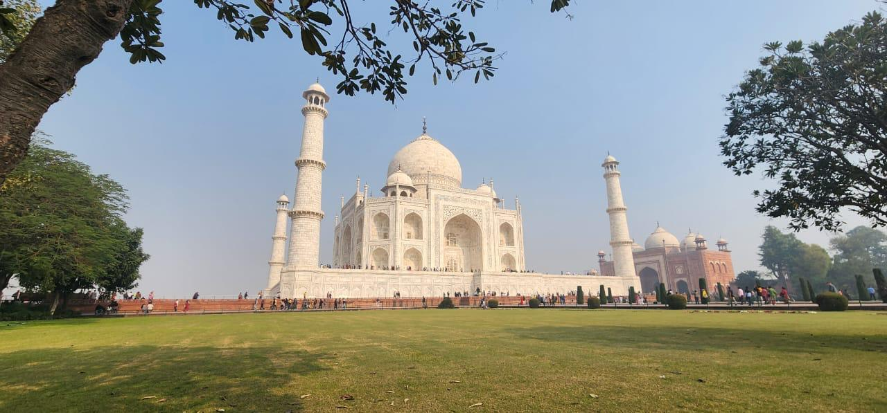
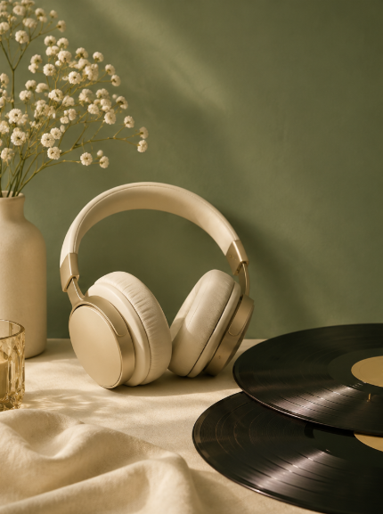

Vellore Institute of Technology
B.Tech — Electronics and Communication Engineering
Built a foundation in engineering, technology and analytical problem-solving.
MY PORTFOLIO

AI & TECHNOLOGY
WELCOME TO MY SPACE
Learning, building and growing with every challenge.
Explore My Journey →WHERE I'VE BEEN
Every experience has been a step towards learning, growing and creating.
Built a foundation in engineering, technology and analytical problem-solving.
Explored artificial intelligence and machine learning through specialised academic learning.
Worked on time-series sales forecasting and product ROI analysis, supporting inventory planning and marketing investment decisions.
Contributed to club coordination, communication and student engagement.
Contributed to the electrical aspects of a student drone development team.
Achieved first place through technical contribution and teamwork.
A LITTLE MORE ABOUT ME
The melodies I return to, the stories I get lost in, and the places that teach me something new.

01 / EXPLORATIONTHE WORLD IS MY CLASSROOM
I love travelling not just for the places I visit, but for the people I meet, the cultures I discover and the perspectives I gain.
Stepping outside my comfort zone reminds me how much there is to learn from the world. Every journey has a story, and every encounter has something to teach.

02 / MELODYA SOUNDTRACK FOR EVERY MOOD
My taste in music is a little bit of everything. I especially admire the timeless voices of Arijit Singh and Lata Mangeshkar.
 03 / CURIOSITY
03 / CURIOSITY
ONE MORE CHAPTER
Mystery and thriller novels are my favourites. Agatha Christie's stories always make room for one more theory, one more clue and one more twist.
The more of the world you experience, the more perspectives you discover.
MY CONSTANT SUPPORT
A little appreciation for the people who make life feel like home.
MY FIRST INSPIRATION
The most beautiful, resilient and hardworking woman I have ever known. My first inspiration, my constant strength and the person who teaches me what grace looks like, even on the hardest days.
She has a way of making everything feel a little more manageable, a little more hopeful and a lot more meaningful. I hope I grow to have even a fraction of her strength, patience and kindness.
If there is one person I will always look up to, it will be her.
MY BIGGEST CHALLENGER
If hard work had a face, it would probably be his. A certified workaholic, a full-time challenger and someone who never misses an opportunity to ask, "Can you do better?"
He keeps me thinking, keeps me questioning and makes sure I never get too comfortable. Sometimes he's my biggest cheerleader, sometimes my toughest critic, and very often both on the same day.
Wouldn't have it any other way.
MY FAVOURITE HUMAN
My partner in crime, my safe space and my favourite person to boss around.
The one who knows all my moods, tolerates most of my nonsense and is somehow always involved in my adventures — whether he volunteered or not.
Our conversations range from absolute nonsense to the most meaningful things, and I wouldn't trade that bond for anything. He may be my younger brother, but he's also one of my favourite people to annoy, laugh with and count on.
A built-in best friend for life, with absolutely no option to unsubscribe.
A LITTLE BIT OF EVERYTHING
Our family is a little bit of everything — love, laughter, endless conversations, friendly arguments and a whole lot of travel plans.
Some of our favourite memories aren't tied to a destination at all. They're somewhere between long car drives, spontaneous short trips, music playing in the background, random food stops and conversations that somehow never run out.
We love exploring new places, collecting little experiences and, most importantly, making memories along the way.
Different personalities, different opinions, one shared love for making every journey an adventure. And, of course, a little playful banter is always part of the itinerary.
MY CREATIVE SIDE
Little things that let me express myself, find balance and enjoy the moment.
01 — CREATIVITY
A space where imagination meets patience. I love expressing myself through art, exploring patterns and bringing little ideas to life.


02 — MINDFULNESS
A little time to slow down, reconnect with myself and find balance. Yoga reminds me that growth isn't always about moving faster; sometimes it's about being present.
Breathe. Balance. Begin.03 — MOVEMENT
One of the activities I enjoy for the freedom of movement and the feeling of being completely in the moment. A refreshing way to step away from everyday routines.
Move. Flow. Repeat.